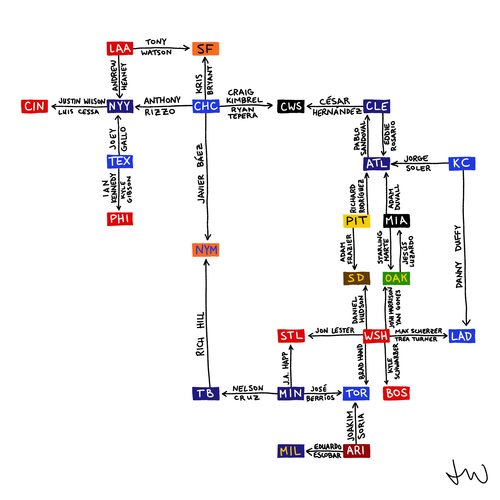
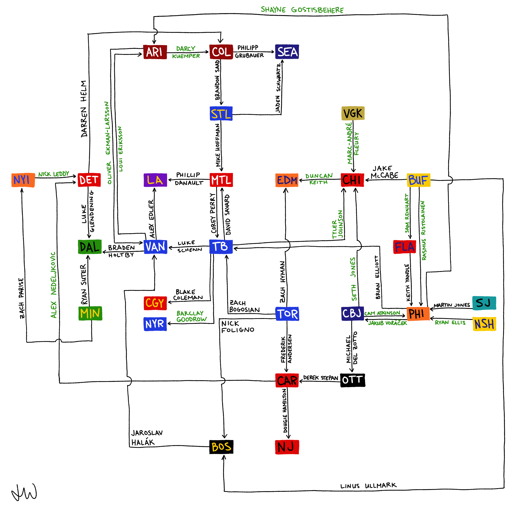
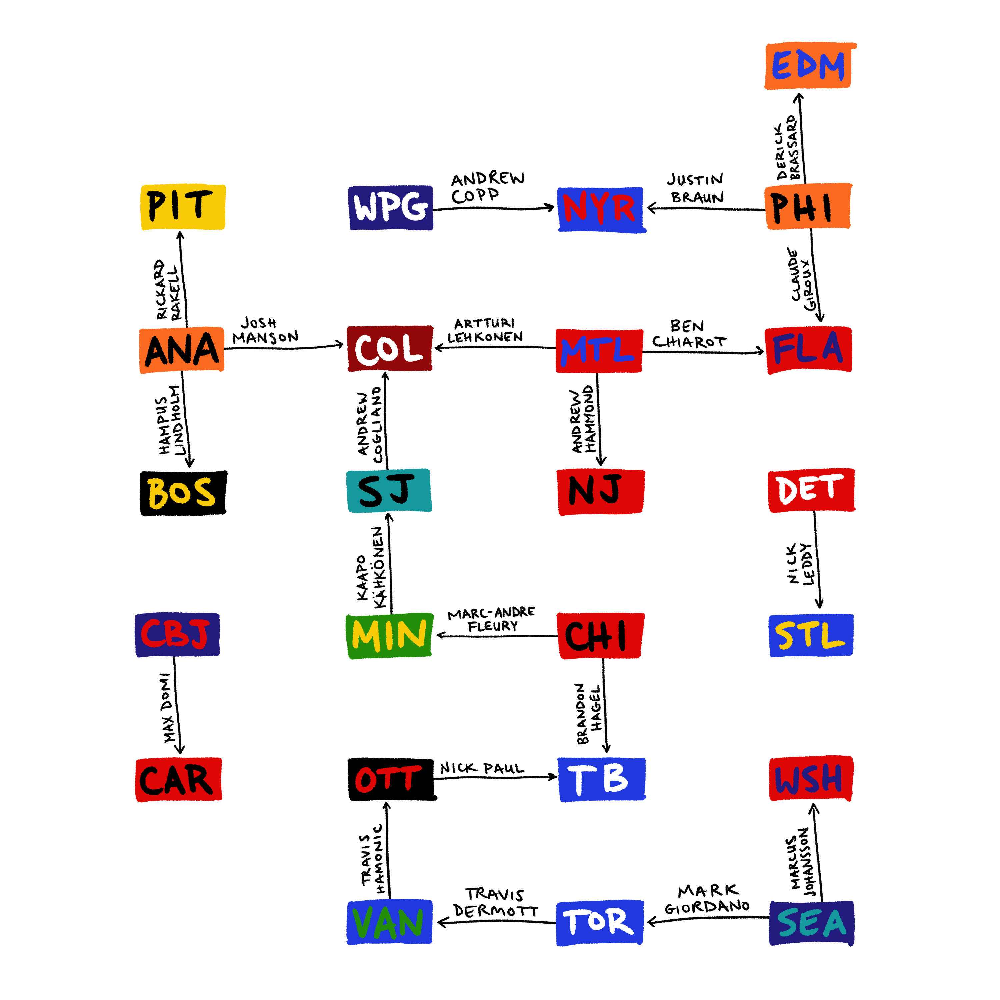
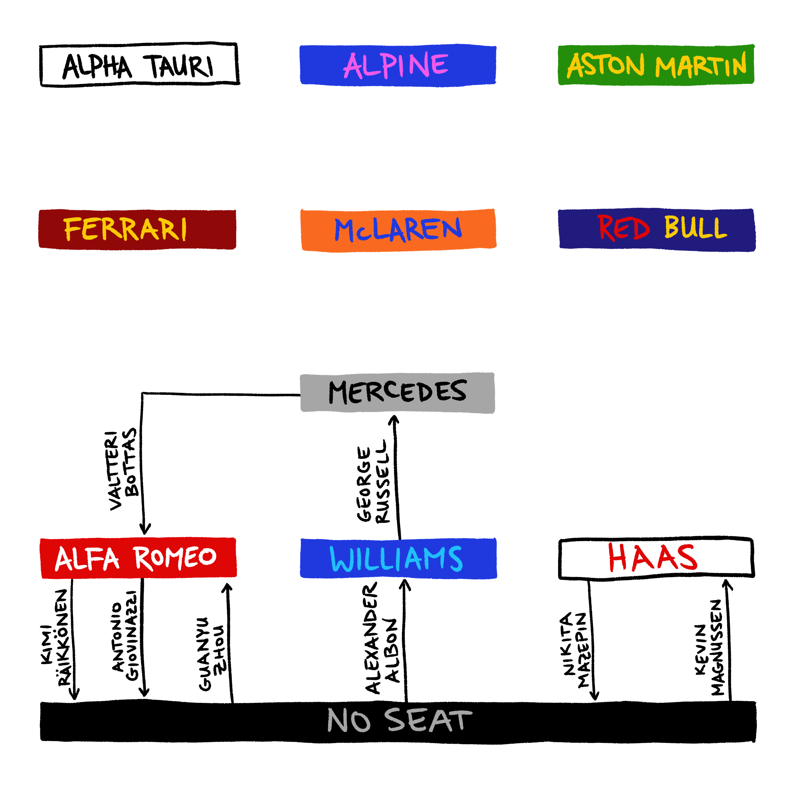
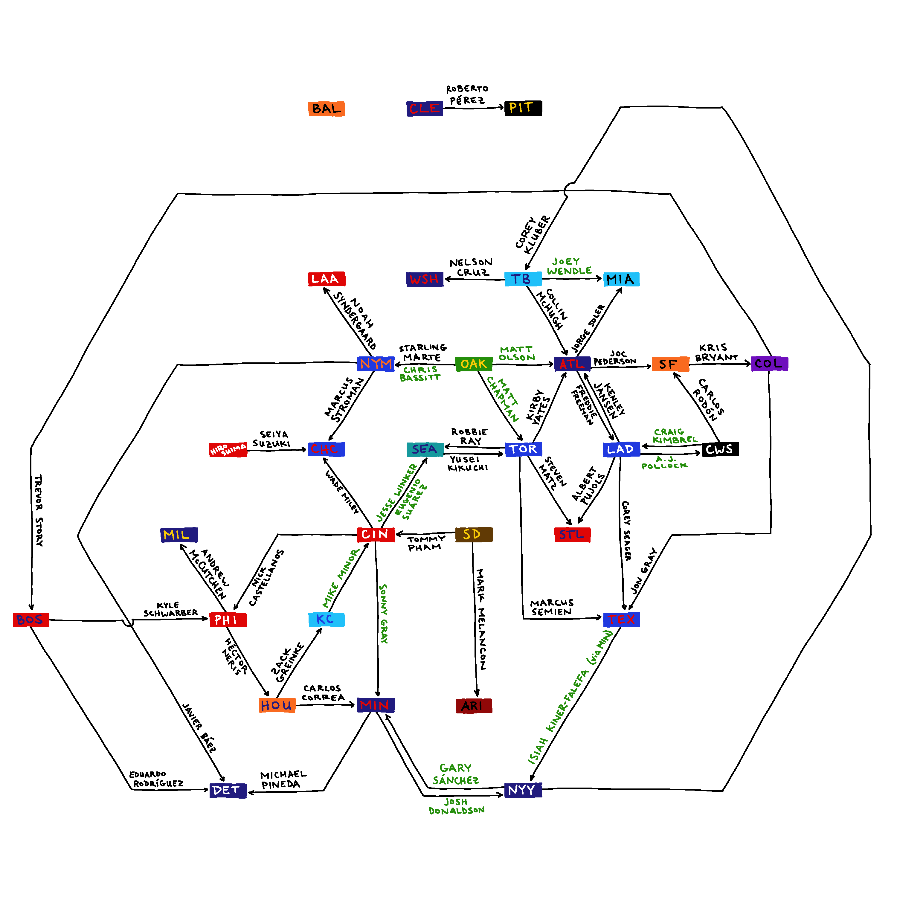
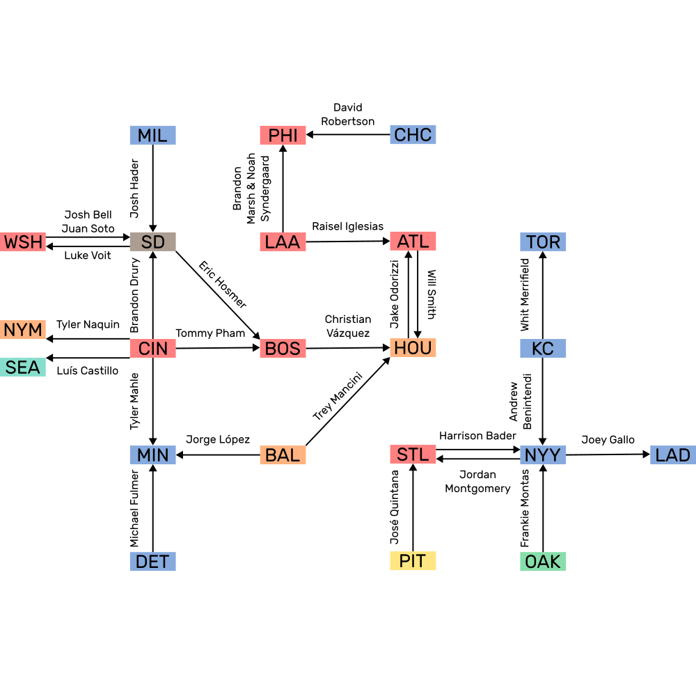
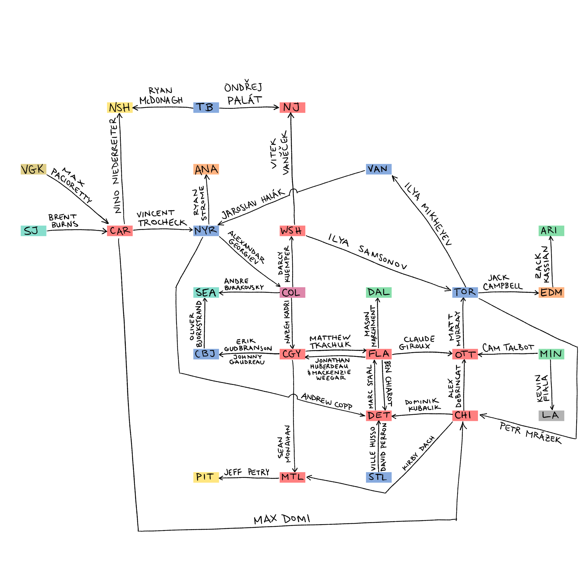
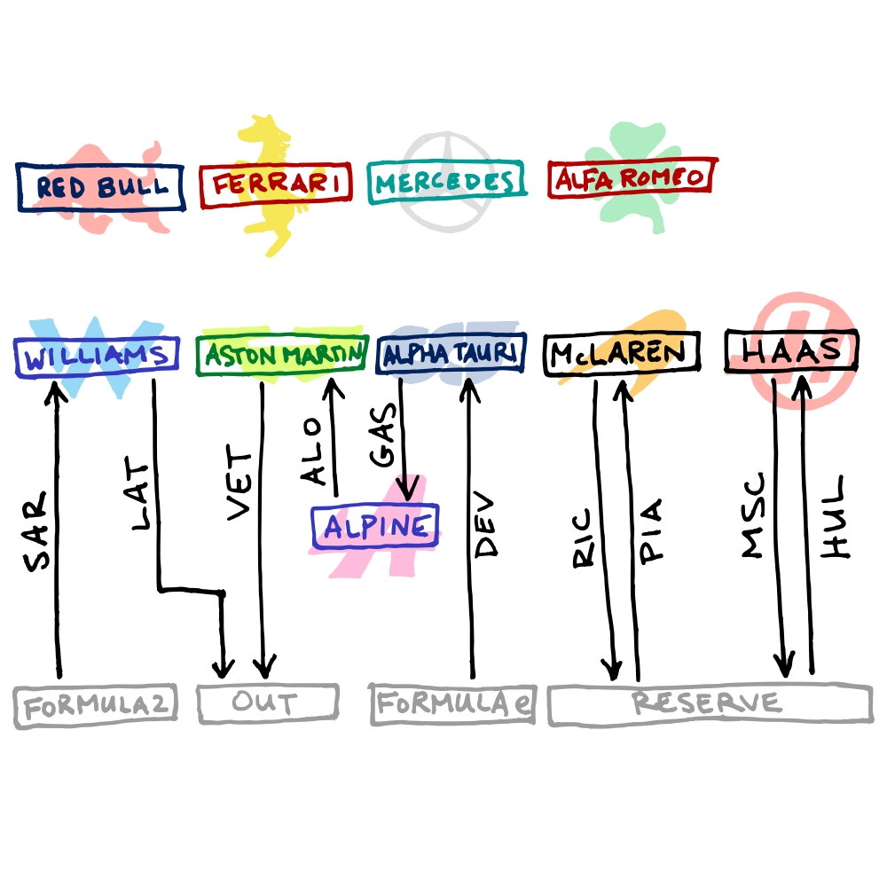

They Play Where Now?
I started doing this to help visualize player movement around times with lots of transactions, like the trade deadline or free agency. The choice of players to include is somewhat arbitrary, but I favour players who have received votes for major awards, been highly paid, or spent a long time with the same team. I won’t include any of the following:
- Transactions from earlier time periods
- Draft picks or prospects who change teams
- Retained salaries or cash included in transactions
- Players expected to play in the minors or overseas
- Players with long-term injuries who aren’t expected to play again
- Players who retire or are released
- Contract extensions or players remaining with the same team
- Players taken in any kind of draft (amateur/entry, expansion, Rule 5)
- International free agents
The point is not to show what team rosters will look like or who “won” a trade. It really is about answering “They Play Where Now?” so I’m not surprised when I look up months later and realize, for example, that César Hernández is playing for the White Sox.
2021 MLB Trade Deadline

2021 NHL Free Agency

2022 NHL Trade Deadline

2022 F1

2021 MLB Free Agency
Note that Sean Manaea was traded from Oakland to San Diego after I made this graphic, but before the start of the season.

2022 MLB Trade Deadline

2022 NHL Free Agency

2023 F1
